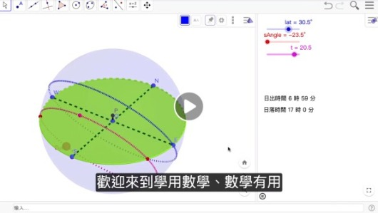

運用GGB的天體運行模擬
剛過冬至，謝謝獵豹朱安強博士給我們在目前課程中，帶來運用GGB的天體運行模擬！
文 朱安強博士
12/21 是冬至，是一年白天最短的一天。
那為何會有白天黑夜消長的現象呢？
在地科課本中有個靜態的太陽軌跡說明圖。
這其實是個動態的 3D 變換，要想像難度還是很高。
然而這些天體運行都可用數學來分析。

在本週的 GGB 課程將與同學來動手實作，並了解這個太陽運行軌跡的秘密。
通過這個模擬就可算出地球上不同經緯度的不同時刻，日出、日落是發生在何時，還可得知太陽在哪個方位升起，不同時間的影長是如何變化。
除了每天的日夜消長外，也可以探究了解到北極圈內的永晝現象到底是什麼意思。
這幾年除了數學科使用GGB 外，在物理、地科也有很多 GGB 的動態模擬。
在實際操作這個過程，將要活化你的數學知識，感覺到數學的有用。